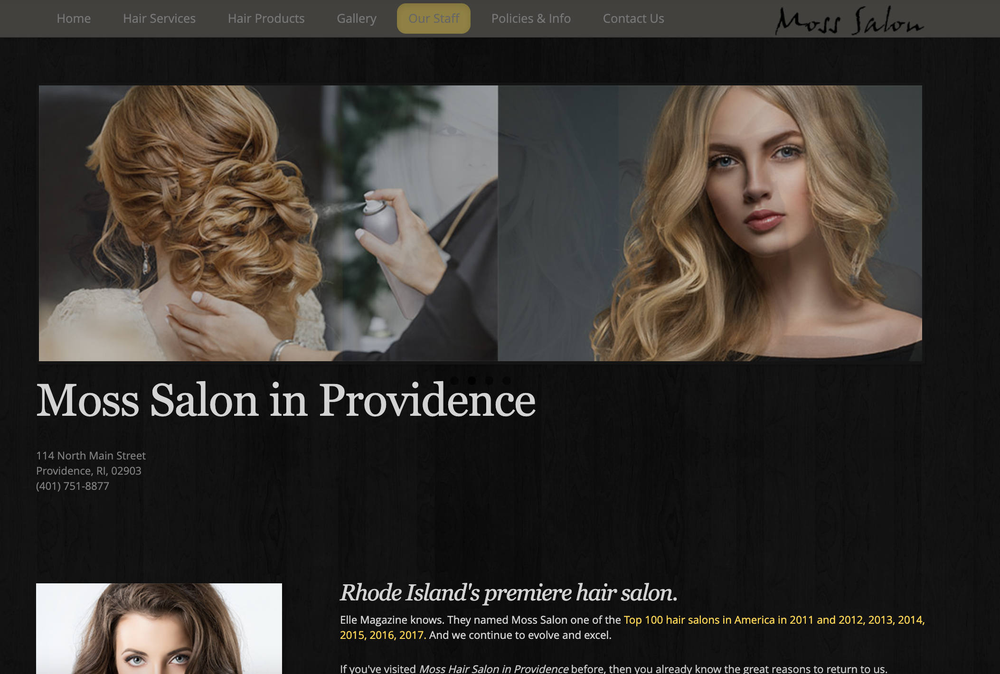
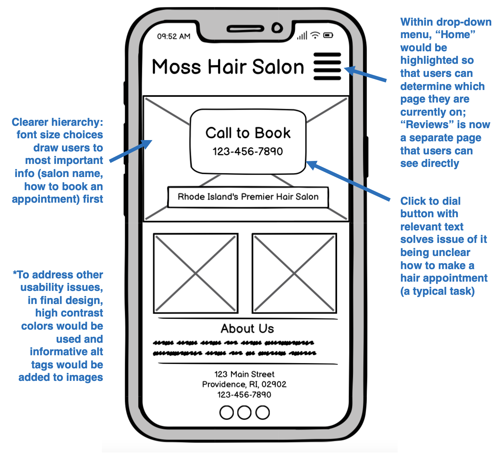
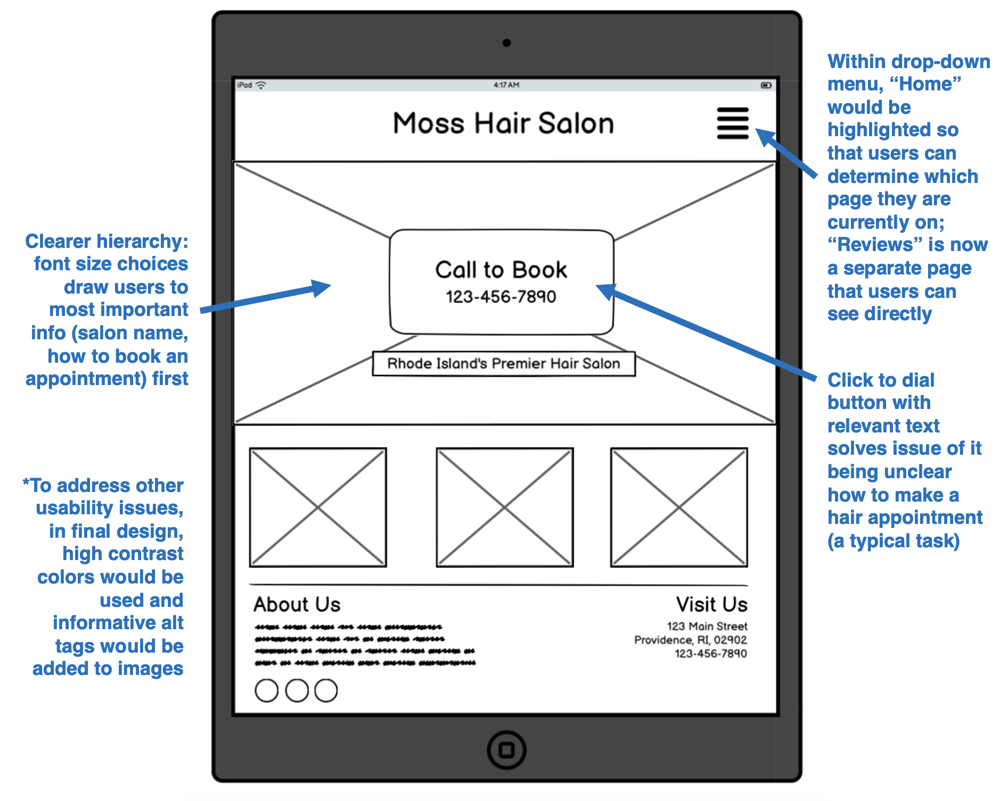
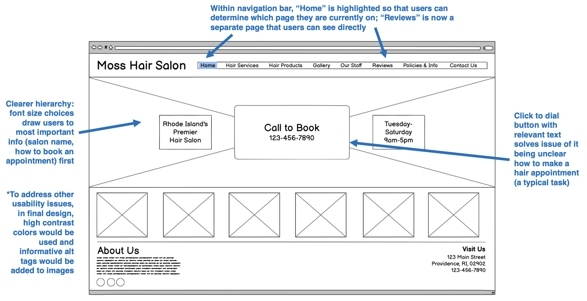
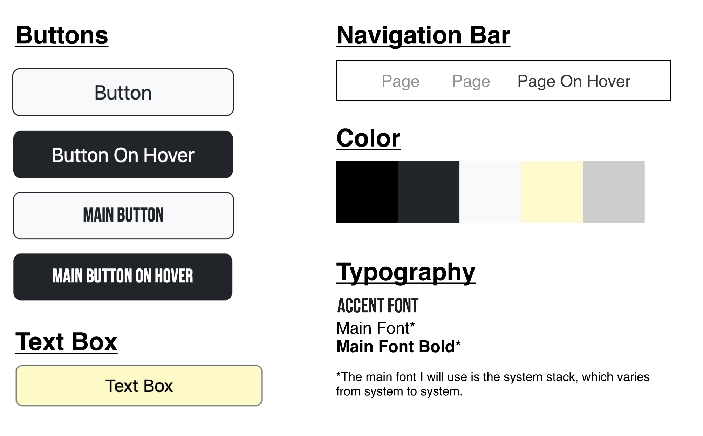
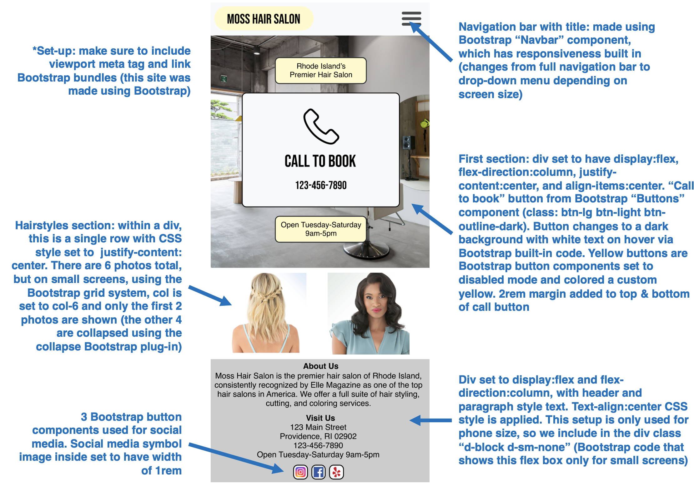
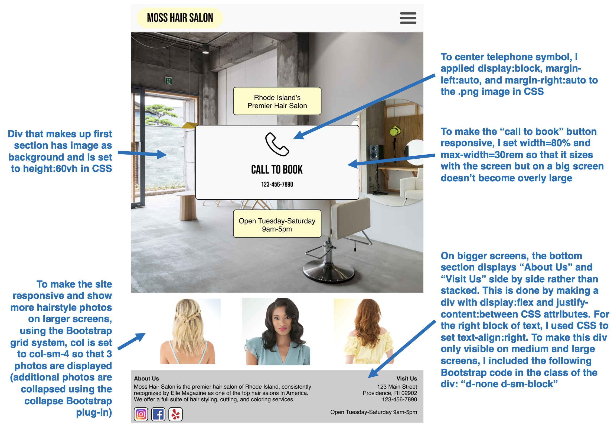
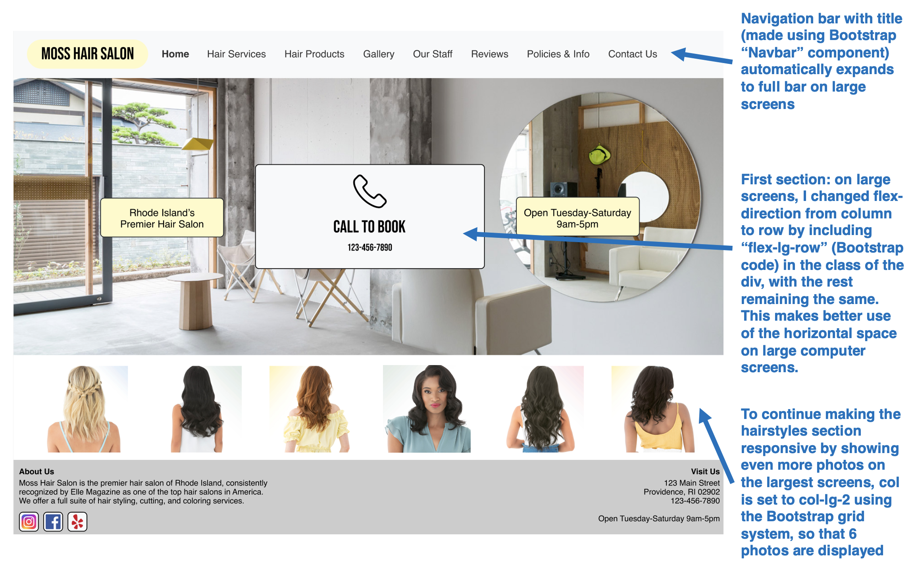
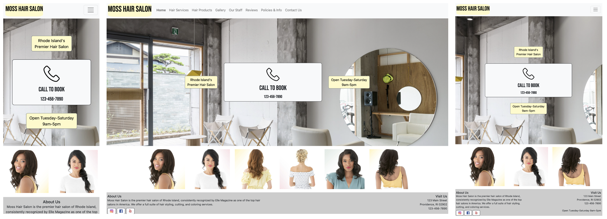

I chose to redesign the website for Moss Hair Salon, a full-service salon located in Providence, RI, because I judge establishments by the look and usability of their site. Rather than drawing me in, the current state of the Moss site would leave me looking for another salon.
The current Moss site (home page shown):

Usability Issues
Poor Learnability for New Users:
Unclear how to perform typical tasks, such as booking a hair appointment
Salon reviews hidden within "Our Staff" page, which new users would not be aware of
Difficult to Determine State of the System: "Our Staff" page on navigation menu is highlighted even when user is on the home page, making it confusing to know what page one is currently on
Visual Design Problems:
Low contrast areas make it difficult to read text
Unclear hierarchy with important information, such as salon phone number for booking appointments, very small
Accessibility Concerns:
The WebAIM WAVE Accessibility Evaluation Tool highlighted low contrast as an accessibility concern, but positively graded the site's use of alt tags on images.
I definitely agree that contrast can be improved. However, I think the site's alt tags could be more useful and descriptive (for example, a current alt tag is "Providence hair styling" for a picture of blow-dryed hair)
Visual Redesign
Low-Fidelity Wireframing: After identifying usability problems, I created low-fidelity wireframes to address those issues across different screen sizes, such as a phone, tablet, and computer.



Visual Design Style Guide: Before creating high-fidelity prototypes, I decided on the web page's typography, colors, and appearance of core components in different states (ex: normal state, on hover). I compiled those choices into a visual design style guide.

High-Fidelity Prototyping: I then crafted high-fidelity prototypes to serve as guides for building the site in HTML and CSS. I have annotated them with guidelines for how they can be coded.



Redesigned Site
Finally, I used HTML and CSS with the Bootstrap front-end framework to code and deploy a redesigned version of Moss's homepage,
which can be found here. The page is fully responsive — well-suited for all users, regardless of device.
Below are screenshots of the live site on phone, computer, and tablet-sized screens:
